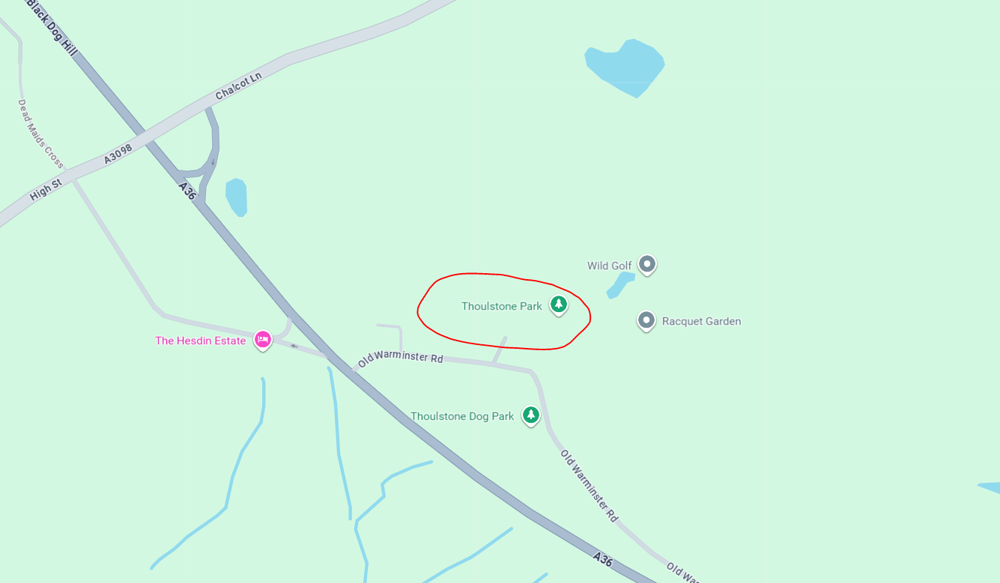

Information
If you're unsure about anything to do with our festival or you want to know more details about it, this is the page for you!
General Information To Know
Click one of the buttons below for more information
General Info
Opening Times
Our site opens at 4pm on the Thursday before the festival starts (the 26th), to ensure that everyone settles into the site before the major events happen.
Some of our food and drink stalls will be open at that time too, so there will be no worries about starving during that time!
The site will be closed on the Monday after the festival (the 30th) at 2pm, so make sure that you are all packed by that time.
What Can I Bring With Me?
We do have rules about what you can bring in - info on what things you cannot bring in are in the Health and Safety tab.
As part of our commitment to reducing plastic waste we have our refillable giant water dispensers, which are around the site. We actively encourage you to bring in empty refillable drinks bottles that you can fill up, so that you can keep hydrated at all times.
Please dispose of your litter responsibly. There are recycling bins and general waste bins throughout the festival site.
Please recycle all of your cups by retuening to our designated 'cup return points'. These will be near our drink stalls and bars.
Camping style chairs and inflatable seating are allowed on-site, but please be aware that there will be designated points near the stages beyond which you will not be able to take those items. Look out for signage on the site.
If you're bringing a baby, you can bring in formula milk powder to mic up or food in pouches for them, but please no glass. For anyone else, food will only be allowed to eat in the campsite and our designated seated areas around the festival site.
If you have any enquiries that are not listed here, please use the form that is on the page, below the location map.
Travel
How To Get To Our Location!
Click here to see our location
Don't Have A Car?
No problem! All you need to do is get a train to Bristol Temple Meads, Lawrence Hill or Stapleton Road, and then get our exclusive festival bus from those stops to our location!
The shuttle service will operate every 10 minutes from Thursday 26th March at 3:30pm - Monday 30th March at 3pm.
If you have any enquiries that are not listed here, please use the form that is on the page, below the location map.
Health and Safety
Medical Information
Events Medical Services are the Medical Team for the festival. The team consists of a wide range of health professionals, including doctors, nurses, paramedics and emergency care practicioners.
There are medical facilities all around the site, including a hospital, a walk-in medical tent and pharmacies.
If you have any special medical needs (e.g. if you are diabetic or coeliac) and need to bring in prohibited items to the festival, we can provide you with a letter of authority. Please email us on soundwavefestival-support@gmail.com.
Things You Can't Bring In
We have a few rules about what you can bring in.
The following things are not allowed to be brought in:
- Glass
- Candles
- Gas canisters larger than 300g
- Smoke canisters
- Knives
- Illegal substances
- Legal Highs
- Nitrous Oxide
- Laser pens
- Megaphones
- Fireworks
- Flares
- Poles, banners and flags
- Animals (other than registered guide or hearing dogs)
- Any items which may be used as a weapon
If you have any enquiries that are not listed here, please use the form that is on the page, below the location map.
Accessibility
Our Accessible Facilities
Raised Viewing Platforms
There will be raised viewing platforms next to all stages, for wheelchair users and those with restricted mobility.
The platforms will have ramped access, seating, charging points, wheelchair-accessible toilets and drinking water.
The raised viewing platforms may get busy. They are operated on a 'first come, first served' basis.
Please note that the platform next to the Main Stage is not covered, so please dress appropriately for all weather conditions.
Ground Floor Viewing Areas
Dedicated ground level viewing areas are available to those who need a less crowded area and the option of sitting for short periods of time.
They are in front of the raised viewing platforms, and they are separated from the main crowds by a barrier. These are primarily standing areas, although limited seating is available and operated on a 'first come, first served' basis.
Accessible Toilets
Wheelchair accessible and standard toilets for accessibility customers are located across the festival site.
Sensory Calming Areas
There will be Sensory Calming Areas across the festival site, which provide a safe, low-level stimulation and recalibration zone for any customers who need to use them.
Accessible entrance lanes
There are dedicated entrance lanes for accessibility customers to access the festival.
Bars
Dedicated accessible lanes are available at each bar. This section of the bar has a lowered counter and bypasses the main queuing system.
If you have any enquiries that are not listed here, please use the form that is on the page, below the location map.
Our Location!
Oldbury Court Estate, Fishponds, Bristol BS16 2JH

Still unsure about anything? Contact us!
Our Email: soundwavefestival-support@gmail.com
Our Social Media Pages: